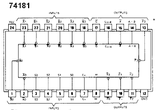
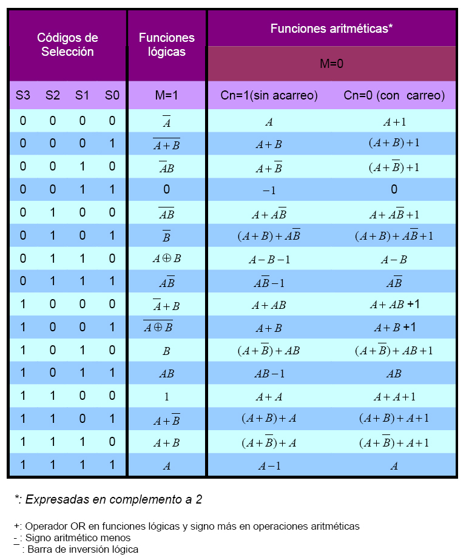

Arithmetic Logic Unit ( ALU )
ALU son las siglas de Aritmethic Logic Unit, es decir, Unidad Lógico Aritmética.
Se trata de un circuito integrado con la capacidad de realizar diferentes operaciones aritméticas y lógicas (es decir, del álgebra de Boole), con dos palabras de n bits Se pueden encontrar como circuitos independientes, y también como bloque funcional dentro de los microprocesadores y microcontroladores.
En general, las operaciones matemáticas están codificadas en binario natural y en complemento a 2 para las restas, pero se pueden codificar en otros códigos, como por ejemplo BCD natural.
El más conocido es 74LS181, que es una ALU de 4 bits, que puede realizar hasta 32 funciones diferentes (16 lógicas y 16 aritméticas), trabaja con números binarios de 4 bits, aunque se pueden conectar en cascada para aumentar el número de bits. Este circuito integrado tiene como entradas:
-Los cuatro bits del operando A.
-Los cuatro bits del operando B.
-Entradas de selección (para seleccionar la operación a realizar, entre 16).
-Entrada de acarreo, por si viene de un integrado con el resultado de menor peso.
-Entrada de control, para seleccionar si la operación a realizar deber ser aritmética o lógica.
-Como salidas tiene los 4 bits del resultado, más una salida comparador (A = B) y salidas de acarreo.
Como curiosidad decir que este circuito integrado trabaja con lógica inversa en las entradas de datos y en las salidas, es decir, que para estos pines se invierte el significado de los 1 y los 0. Aunque es posible hacerlo trabajar con lógica directa.
Configuración de pines del CI 74LS181

Funciones que pueden realizarse con el 74LS181
